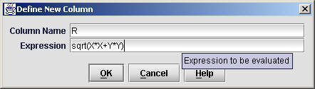
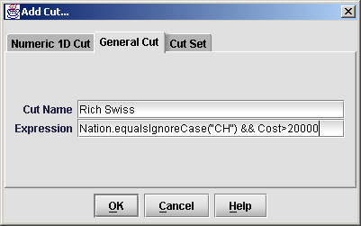
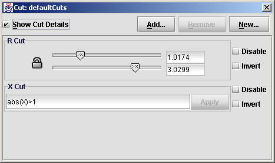

The JAS Tuple Explorer is a tool for creating plots from tabular data (or N-tuples). It is particularly well suited to statistical analysis of large tables (with 1,000s or 1,000,000s of rows). The main features are:
Text in green indicates limitations which will be removed soon in future releases.
To open a dataset you can either use File, Open File menu item. You can currently open text files, SQL databases (using JDBC) as well as Paw files and Root files (written with Root 3.00/6 or later). Currently all NTuples are read in to memory when they are opened, so for large data sources this may take some time (and even worse you may run out of memory.)
Once you have opened a file any NTuples found in the file will be displayed in the tree on the right of the window. To close an NTuple select it in the tree and use the File, Close menu.
The easiest way to create a plot is to double-click on the column to be plotted in the tree. This will create a Histogram of the column selected. Alternatively you can choose two columns and use the Histogram, Scatter Plot or Profile Plot commands in the Tuple menu. When selecting two or more columns the order of the selection is important, for example when creating 2D plots it determines which items will appear on the X and Y axes. In future we will have a Create Plot command which will allow much more flexibility in creating plots.
You can make many changes to the style and limits of the plot using the popup menu available by right-clicking on the plot. You can also perform fits using this menu.
You can define new columns dynamically which are derived from the information in the existing columns. Select an N-Tuple in the tree, and then choose Tuple, Define New Column.

Enter the name for the new column in the top text field, and enter the expression to evaluate in the lower text field. The expression can use the names of other columns directly, and any of the common math functions (for a complete list see the java.lang.Math class). For example if your N-Tuple contains columns X and Y you can define a new column using the expression:
sqrt(X*X+Y*Y)
Note that items in the expression are case sensitive. Right-clicking in the expression field will bring up a popup menu that you can use to easily insert references to columns. The expressions use normal Java syntax (which in basically the same as C syntax).
For columns that contain Strings or Dates you can use methods from the java.lang.String class and java.lang.Date class. For example:
Nation.toLowerCase()
Cuts allow you to reject some columns of the N-tuple from your plots. To create a new cut select an N-Tuple in the tree, the choose Tuple, Add Cut.

Currently there are two types of cuts you can create, a numeric cut or a general cut. Numeric cuts can only be applied to numeric columns. They allow you to use sliders to rapidly change the cut thresholds and see how this effects you plots. General cuts allow you to use boolean expressions to accept or reject columns. Unlike numeric cuts they can be applied to multiple columns and can work on non-numeric columns. After creating a cut it will appear as a new column in your N-Tuple. Double-click on the column to change the cut, or to change the sliders.
More cut types will be added later.
By default all cuts are applied to all plots. This can be adjusted by using Cut Sets. By default a single Cut Set is created for each N-Tuple, called the Default Cut Set. All cuts are added to the default cut set as they are created. The default cut set is applied to all new plots as they are created.
You can view the contents of the default cut set by selecting an N-Tuple in the tree, and then selecting Tuple, Show Default Cut Set.

Using this dialog you can add and remove cuts from the default cut set, and can also invert or disable individual cuts.
You can create any number of Cut Sets using the Tuple, Add Cut command, and can add and remove cuts from them by double-clicking on the column representing the Cut Set in the tree. Cut sets can be nested inside other cut sets. The Add and Remove buttons in the Add Cut Dialog, Cut Set tab do not currently work. You must create the cut, then double click on it to bring up its properties dialog, and add and remove items from that dialog.
You can change the cuts which are applied to a particular plot by right clicking on the plot, and choose Cuts from the popup menu. Each plot has its own (anonymous) cut set, which by default contains the Default Cut Set. You can remove the Default Cut Set and add or remove any other cuts you want (note however that making changes to the Default Cut Set itself will effect all plots to which it is applied).
You can tabulate a complete N-Tuple by selecting the N-Tuple in the tree and choosing Tuple, Tabulate. You can tabulate selected columns of the N-Tuple by selecting those columns and choosing Tuple, Tabulate Selected Columns. The columns will be placed in the table in the order in which they were selected. You can change the order by dragging on the column headers.
You can create any number of pages using the File, New, Plot Page command. You can "drag & drop" columns of the NTuple into the page to create plots. If you drop multiple columns onto the same plot they will be overlaid on the same plot. You can also drag cuts on to the page. It is not currently possible to drag 2D plots on to the page. You can move items around on the page by clicking on them, and then dragging on the blue border.
You can print pages using the Print (or Print Preview) commands in the File menu. In future more flexibility over the size and style of pages will be provided.